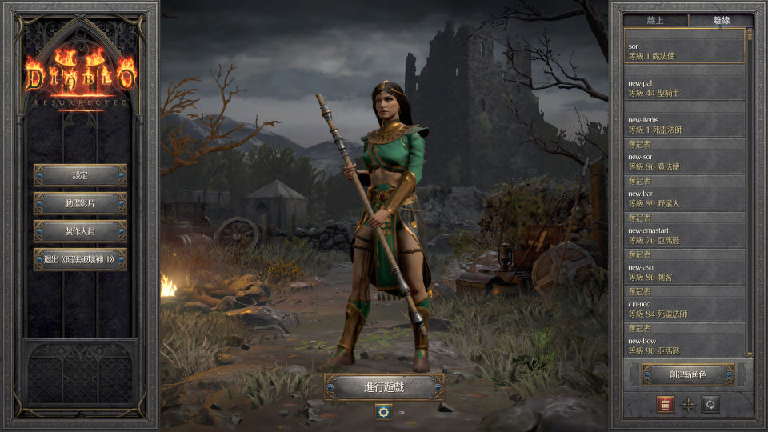
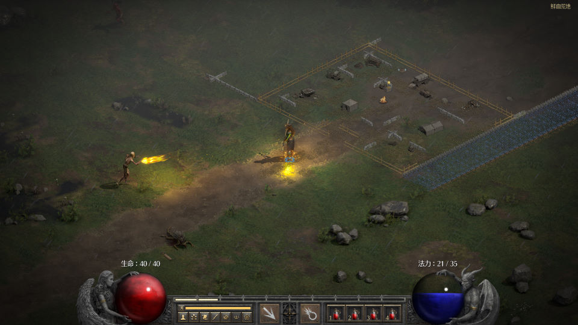

名稱：暗黑破壞神2：獄火重生／重製版 (Diablo 2: Resurrected，中文版)
簡介：Blizzard 2021年出品的角色扮演遊戲，為「暗黑破壞神2」的復刻版，以斜角3D畫面
呈現，採單人即時方式戰鬥。2026年還增加了術士新職業 [待補]。


檔案：本版為1.5.73離線版（無術士新職業）
保護：網路序號登錄認證，必須連網才能執行，若不想連網只能找離線破解版。
備註：顯示卡不可太差，否則玩起來會很卡，只能調降解析度因應。
檔案：kanzaki.rar = 獄火重生MOD